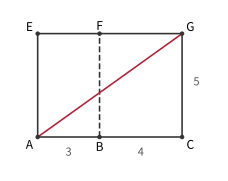

例題 5図形の性質 直方体の表面を通る最短経路
直方体 ABCD-EFGH で \(AB=3,\ AD=4,\ AE=5\) とする。頂点 A から、表面を通って頂点 G に至る最短の経路の長さを求めよ。

【答案（テストに書く形）】
\[\sqrt{74}\]答
直方体 ABCD-EFGH で \(AB=3,\ AD=4,\ AE=5\) とする。頂点 A から、表面を通って頂点 G に至る最短の経路の長さを求めよ。

【答案（テストに書く形）】
\[\sqrt{74}\]答